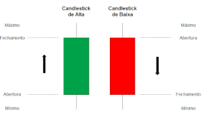

Os gráficos de day trade são ferramentas que ajudam os traders a tomar decisões rápidas com base em movimentos de preço. Os principais gráficos usados no day trade são o gráfico de velas, também conhecido como candlestick, e o gráfico de pontos.

Gráfico de velas Também conhecido como candlestick, é semelhante a um gráfico de barras Cada candle apresenta o valor de abertura, fechamento, preço máximo e mínimo
A análise técnica das candles ajuda a identificar momentos de compra e venda Gráfico de pontos, Não considera o tempo, o que permite que o trader reaja rapidamente às mudanças de preço O trader define um valor mínimo de variação do ativo, chamado de tick O gráfico de pontos cria uma marca sempre que esse valor é alcançado Além dos gráficos, os traders também usam padrões gráficos, que são figuras formadas no gráfico durante o pregão. Alguns exemplos de padrões gráficos são: Triângulos, Cabeça e ombros, Bandeiras, Flâmulas, OCO. neste link você terá alguns exemplos